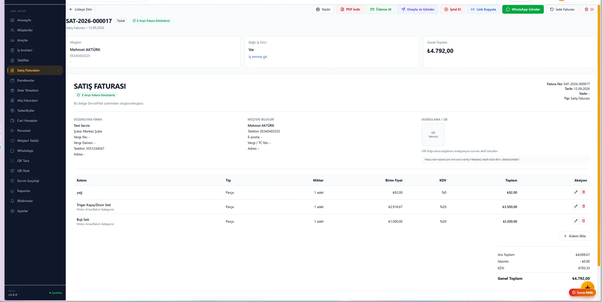
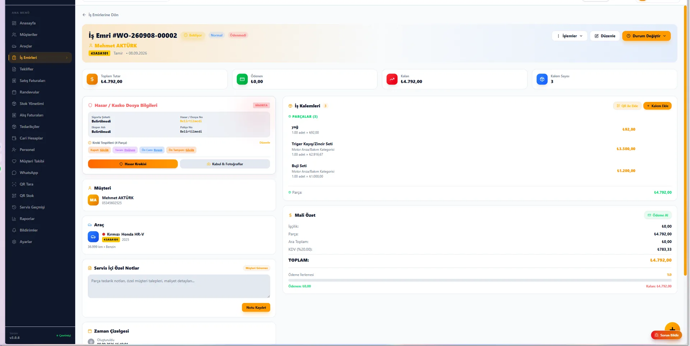

Ana Sayfa › Blog › Rehber
Oto Servis Muhasebe Programı: Eksiksiz Rehber (2026)
14 Eylül 2026 · ServisPilot Ekibi · 9 dakikalık okuma
“Usta, bu araca ne yapmıştık?” sorusu kadar tanıdık bir diğeri daha vardır her servis sahibinin köşesinde: “Bu ay X Otos'un carisi nerede, kaç fatura kesmiştik?” Cevap genelde bir defterin arasında, bir Excel'in üçüncü sayfasında ya da muhasebeciye giden kağıt yığınının içindedir. Bu rehber, oto servis muhasebe programı denilen yazılımın — yani servis takibi ile muhasebeyi tek yerde toplayan çözümlerin — ne işe yaradığını, kime gerekli olduğunu, seçerken nelere bakılacağını ve 2026 fiyatlarını gerçek verilerle inceliyor.
Bu rehberde:
1. Oto servis muhasebesi neden farklıdır?
Bir manavın muhasebesi ile oto servisin muhasebesi aynı şey değildir. Serviste her iş, üç parçanın birleşiminden oluşur: işçilik, parça ve araca özel geçmiş. Bu üçlü, klasik ön muhasebe programlarında tam karşılanmaz:
- İşçilik + parça birlikte faturalanır. Aynı müşteriye aynı gün beş kalem işçilik, üç kalem parça gider. Faturanın bu kırılımı servis kaydından doğmalıdır; sonra elle yazılırsa hata oranı artar.
- Cari, kişi değil araç bazlı yürür. Aynı müşterinin üç arabası olabilir; her aracın kendi bakım geçmişi, kendi borcu vardır.
- Parça stoku fizikseldir. Rafındaki filtreyi satan programın, o filtrenin stoktan düştüğünü de bilmesi gerekir — yoksa ay sonunda “stok neden uyuşmuyor” tartışması başlar.
- Faturalama e-Fatura/e-Arşiv üzerinden yapılır. GİB'e entegre faturalama artık ayrı bir iş kolu; servis kaydından kopuk yürütülüyorsa çift iş demektir.
İşte “oto servis muhasebe programı” dediğimiz şey, tam olarak bu dört ihtiyacı tek akışta çözen yazılımdır: iş emri açılır, parça stoktan düşer, cari işler, fatura çıkar — hepsi aynı kayıttan.
Bir de işin müşteri tarafı var. Servis müşterisi tek seferlik değil: üç ay sonra yağ bakımına, altı ay sonra periyodik bakıma gelmesi gerekir. Gelmeyen müşteriyi hatırlatan da yine düzenli kayıttır — aracın geçmişi elinizdeyse, “sayın müşterimiz, aracınızın bakımı zamanı geldi” mesajını gönderebilirsiniz. Bu döngü, defter tutan bir servisle program kullanan servis arasındaki en büyük ciro farkını yaratan şeydir.
2. Defter ve Excel neden yetmez?
Excel'i sevenler olduğunu biliyoruz — çoğu servis de bugün onunla çalışıyor. Ama Excel'in serviste üç kör noktası vardır:
- Hücreye kimse bakmaz. Yanlış yazılan bir plaka ya da eksilen bir işçilik kalemi, ay sonunda muhasebeciyle oturana kadar fark edilmez.
- Araç geçmişi kaybolur. “Usta, bu araca en son ne yapmıştık?” sorusunun cevabı iki yıllık bir dosyanın içindeyse, o cevap pratikte yok demektir. Müşteri güveninin yarı'sı bu sorunun anında cevaplanmasından gelir.
- Telefonundan göremezsin. Sen atölyedeyken müşteri “faturayı atar mısın” diyor; Excel'in olduğu bilgisayar başka odada, dosya başkasında açık.
Defter, Excel'in bu üç sorununu daha da büyütür. Özetle: kayıt tutuyorsun ama sistem yok. Geçilecek yer tam olarak burası.
3. Oto servis muhasebe programı tam olarak ne yapar?
Güncel bir bulut programda tipik akış şöyle işler:
- Araç kabulü: Müşterinin ruhsatı okutulur; plaka, marka, model ve şasi bilgisinden iş emri saniyeler içinde açılır.
- İş emri yönetimi: Yapılacak işler listelenir, teknisyene atanır, durum “kabul → işlemde → tamamlandı” olarak ilerler.
- Parça ve stok: Kullanılan parça QR/barkodla stoktan düşer; kritik seviyeye gelince uyarı verir.
- Müşteri onayı: Büyük işlerde onarım fotosu ve tutar WhatsApp'tan müşteriye gider; onayı gelen işe başlanır. (Telefonla “abi çıkmış” kavgası biter.)
- Faturalama: Servis kaydından e-Fatura/e-Arşiv doğrudan kesilir — ayrı program açmadan.
- Cari ve kasa: Tahsilat, borç ve kasa hareketleri aynı kayda işlenir; ay sonu raporu hazırdır.
Muhasebeci tarafında da fark aynıdır: dönem sonunda çanta dolusu evrak yerine, düzenli cari-kasa dökümü elinde olur.

Serviste bir gün: programlı akış nasıl işler?
Soyut özellik listesi yerine işin içinden gidelim. Sabah 09:00, müşteri ruhsatı uzatıyor. Programı kullanan usta telefonun kamerasıyla ruhsatı okutuyor — plaka, marka, şasi ekranda; iş emri açılmış durumda. Kağıtla çalışan komşu servis ise aynı bilgiyi elle yazıyor ve akşam sisteme “fırsat bulursa” geçirecek.
Öğlen 13:00. İş emrinde üç parça eksik çıktı; usta QR ile rafı tarayıp parçayı işe ekliyor, stok otomatik düşüyor. Onarım tutarı müşterinin WhatsApp'ına onarım fotosuyla gidiyor; müşteri onay veriyor, iş devam ediyor. Onaysız işe başlayan bir servisin yaşadığı “bu kadar parça neden” görüşmesi hiç yaşanmıyor.
Akşam 18:30. İş tamamlanıyor; servis kaydından e-Fatura kesiliyor, tahsilat kasaya işleniyor, araç geçmişine bugünün kaydı ekleniyor. Ay sonu geldiğinde rapor hazır — muhasebeciye çanta taşımaya gerek yok. Fark, özellik listesinde değil; günde onlarca kez tekrarlanan bu küçük akışlarda birikiyor.
4. Seçerken bakılacak 7 kriter
- Bulut mu, masaüstü mü? Atölyede tabletten erişim gerekiyorsa bulut şart. Masaüstü programlar tek bilgisayara hapseder, yedekleme yükü sizde kalır.
- E-Fatura yerleşik mi, aracı mı? “E-fatura desteği var” cümlesi kandırmabilir — faturayı başka bir programla bağlantılı kesiyorsa her ay o programın aboneliğini de ödüyorsunuz demektir.
- Ruhsat OCR var mı? Plakayı elle yazmak, iş emri açmanın en zaman alan parçasıdır. OCR ile bu 20 saniyeye iner.
- QR/barkod stok destekliyor mu? Parça takibi kağıtla yapılmıyorsa QR en hızlı yol.
- WhatsApp entegrasyonu var mı? Müşteri onayı ve hatırlatmalar bu segmentte en çok dönüş getiren özellik.
- Kurulum ve veri aktarımı kimde? “Kurulumu biz yapıyoruz” diyen satıcı, geçiş riskini üstlenmiş demektir.
- Deneme kartsız mı? Kredi kartı istemeden deneme veren program, kendi ürününe güvenen programdır.
Bulut mu, masaüstü mü? Yan yana karşılaştırma
Kriter listesindeki ilk maddeyi çoğu servis sahibi en çok burada zorlanıyor. İki yaklaşımı tablo haline getirelim:
| Özellik | Masaüstü program | Bulut (online) program |
|---|---|---|
| Erişim | Sadece kurulu PC | Telefon, tablet, her yerden |
| Kurulum | Kurulum + güncelleme sizde | Gerekmez, otomatik güncel |
| Yedekleme | Manuel / disk bazlı | Otomatik, sunucu tarafında |
| Müşteri onayı / bildirim | Sınırlı ya da yok | WhatsApp'tan otomatik |
| Çalışma biçimi | İnternet yoksa da çalışır | İnternet gerektirir |
Masaüstünün tek gerçek artısı internet bağımlılığı olmaması. Ama telefonundan fatura atmak, müşteriye WhatsApp'tan onay göndermek ve tatildeyken raporu görmek bugün artık “lüks” değil — müşterinin beklentisi haline geldi. Seçim yaparken kendi gününü düşün: kaç kez telefondan bir bilgiye ihtiyaç duydun? Cevap haftada birden fazlaysa, bulut senin tarafın.
5. Gerçek maliyet: sadece lisans değil
Program fiyatına bakarken toplam maliyeti belirleyen üç gizli kalemi de hesaba katın:
- Ayrı e-fatura aboneliği: Piyasada e-Fatura/e-Arşiv programları aylık 400-700 ₺ bandında satılıyor. Muhasebesi olmayan servis programlarının yanında bu kalem çoğu zaman ayrı ödenir. E-Fatura için ayrı program ödememek, toplam maliyeti ciddi düşüren kalem.
- Kurulum ve veri aktarımı: Kimi satıcı kurulumu ek ücrete bağlar; bazıları ücretsiz yapar.
- Kullanıcı başı ücret: Bazı programlar teknisyen sayısı kadar ek ücret ister; “işletme başına sabit fiyat” verenleri karşılaştırmada öne geçirin.
Örnek üzerinden gidelim: Aylık 800 ₺'lik bir servis programı + 600 ₺'lik ayrı e-fatura aboneliği = 1.400 ₺/ay. E-Fatura modülü yerleşik bir paket çoğu zaman bu toplamın altında kalır — fiyat etiketi tek başına yanıltır.
6. 2026 pazarındaki seçenekler ve fiyatlar
Eylül 2026 itibarıyla Türkiye pazarındaki öne çıkan servis programlarının şeffaflaştırılmış karşılaştırması aşağıda. Fiyatlar firmaların kendi sitelerinden alınmıştır; kampanyalar değişebileceği için karar öncesi güncel sayfalarını kontrol edin.
| Program | Fiyat | Tam muhasebe modülü | E-Fatura |
|---|---|---|---|
| ServisPilot | 1.599-2.399 ₺/ay* | Var (cari, kasa, rapor) | Yerleşik, aracı ücreti yok |
| ServisTakipPro | 499 ₺/ay | Yok (kasa/cari var) | Sınırlı |
| ServisiniTakipEt | 1.000 ₺/ay | Yok (cari/e-Arşiv var) | e-Arşiv |
| Automasyon (Karnaval) | Sitede fiyat yok | Var (modül) | Var (modül) |
* Yıllık pakette aylık 1.599 ₺; aylık plan 2.399 ₺. ServisPilot'ta kurulum ve veri aktarımı ücretsizdir.
Dikkat edin: giriş bantındaki iki programın da tam muhasebe modülü yok. Yani “ucuz” görünen seçeneğe e-fatura aboneliğini ve muhasebeciye giden ek işi eklediğinizde, tek paketli çözümle aradaki fark kapanıyor — üstelik iki ayrı sistemle uğraşmıyorsunuz.

7. Excel'den programa geçiş: 5 adım
“Excel'i bırak” demek, yıllardır işleyen bir alışkanlığı bırakmak demek — o yüzden geçişi tek hamlede değil, beş adımda öneriyoruz:
- Envanteri çıkarın: Aktif müşteri-araç listesi ve parça stoğunu tek Excel'de toplayın (çünkü o listeyi programa taşıyacağız).
- Veriyi aktarın: Müşteri/araç/stok listesini toplu aktarın — ServisPilot'ta bu işin tamamını kurulum ekibi yapar.
- İki hafta paralel çalışın: Yeni işleri programdan yürütün, eskiler Excel'de dursun. Üçüncü haftadan itibaren Excel'i kapatın.
- İlk ayı raporla kapatın: Cari-kasa dökümünü muhasebecinizle birlikte kontrol edin; bir sonraki ay zaten otomatik.
- Eki alışkanlığı verin: Onarım fotosu ve teslim formu eklemeyi standart yapın — müşteri onayı WhatsApp'tan akar.
Program alan servislerin en sık yaptığı 3 hata
- Sadece fiyat etiketine bakmak: 499 ₺'lik program + 600 ₺'lik e-fatura aboneliği + muhasebeciye ek kağıt işi, çoğu zaman tek paketli 1.599 ₺'yi geçer. Karşılaştırmayı toplam aylık maliyet üzerinden yapın, liste fiyatı üzerinden değil.
- Kurulumu “sonra hallederiz” diyerek ertelemek: Veri aktarımı ilk hafta yapılırsa geçiş sorunsuzdur; üç ay sonrasına bırakılan aktarım, birikmiş kayıtla birlikte hiç yapılmaz.
- Ekibi süreç dışı bırakmak: Programı sadece tezgâhta tutmak, asıl kazancı getiren iş emri + fotoğraf + WhatsApp onayı akışını devre dışı bırakır. Teknisyenlerin telefonundan da girilebildiğinden ilk gün emin olun.
8. Sıkça sorulan sorular
Oto servis muhasebe programı muhasebecimin işini devralır mı?
Devralmaz, kolaylaştırır. Program içinde tuttuğunuz cari, kasa ve fatura kayıtları; dönem sonunda muhasebecinize verilecek veriyi önceden düzenli hale getirir. Muhasebeciniz resmi beyan ve defter işlemlerine devam eder, siz aradaki kağıt trafiğini bitirirsiniz.
E-Fatura kullanmak için ayrı bir program almam gerekir mi?
ServisPilot gibi E-Fatura modülü yerleşik programlarda gerekmez; fatura servis kaydından çıkar ve aracı yazılım ücreti ödemezsiniz. Ayrı bir e-fatura programı kullanıyorsanız bunun aylık aboneliği genellikle 400-700 ₺ bandındadır ve toplam maliyeti yükselten gizli kalem budur.
Excel'den oto servis programına geçmek zor mu?
Değildir. Müşteri ve araç listenizi Excel'den toplu aktarabilirsiniz. Kurulumu ücretsiz yapan bir bulut programı seçerseniz ilk gün içinde iş emri açmaya başlarsınız; iki hafta paralel çalışmak geçiş için yeterlidir.
Masaüstü program mı, bulut tabanlı program mı kullanmalıyım?
Bulut tabanlı programlar; telefon veya tabletten erişim, otomatik yedekleme, kurulum gerektirmemesi ve her yerden rapor görme avantajı sağlar. Masaüstü programlar tek bilgisayara bağlanır, yedekleme ve güncelleme yükü sizde kalır. Saha ekibiyle çalışan servisler için bulut daha uygundur.
Oto servis muhasebe programı aylık ne kadar?
2026 itibarıyla pazarda giriş seviyesi servis programları aylık 499-1.000 ₺ bandındadır ancak çoğunda tam muhasebe modülü bulunmaz. E-Fatura modülü yerleşik, servis ve muhasebeyi birlikte sunan paketler daha üst bantta fiyatlanır; ayrı e-fatura aboneliği ve aracı ücretlerinden tasarruf edilerek toplam maliyet dengelenir.
Servisinizi tek pakette yönetin
ServisPilot; ruhsat OCR, QR parça takibi, WhatsApp müşteri onayı ve yerleşik GİB E-Fatura ile servis + muhasebeyi tek ekranda toplar. Kurulumu biz yaparız — siz sadece WhatsApp'tan yazın.
İlk 50 özel servise sabit fiyat avantajı devam ediyor.